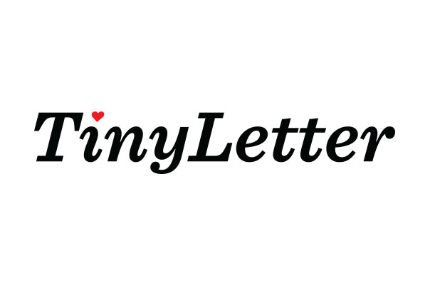

TinyLetter Redesign
Project Lead: Kate Kiefer
Art Direction and design: David Sizemore
Development: Steven Sloan
UX Design: Caleb Andrews
App Devs: Alan Crissey, Jordan Andree, Will Castillo.
TinyLetter was redesigned in the middle of 2014, after sitting relatively untouched for several years. It was a comprehensive project, with the brand, site, and app all getting refreshed and brought up to date, with additional features slated to drop in the following months.
TinyLetter Logo
The first real logo for TinyLetter was created by Ron Lewis in 2011, and he acted as creative director as I worked on the logo redesign. This redesign wasn't positioned to wipe the slate clean; we just wanted to update the brand to better reflect the audience that was using it—writers.
You can see here the original logo, and how the redesign was beginning to take shape. We did explore other options for the logo, but they were abandoned for a more subtle update.
The logo continued to take shape. We focused on making the redesign a natural evolution. Italics were kept, and we deliberated on whether to keep the words separate colors. These were just a few of my favorite type options that were explored.

Redesigned Logo
Redesigned Wordmark
In the end we had a subtle update that reflected the sophistication of the TinyLetter community.
TinyLetter Site
The site had stayed the same for ages as well. The difficult task of defining the aesthetic of the brand refresh was really done with the logo, and finding the right tone for the site flowed easily.
TinyLetter App

The TinyLetter app was also completely redesigned by Caleb Andrews, and developed by Alan Crissey, Jordan Andree, and Will Castillo. They did an amazing job redesigning and developing the app on a tight deadline, and they absolutely nailed it.